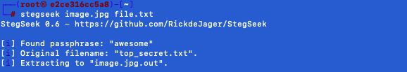

Steghide est un programme de stéganographie capable de cacher des données dans divers types d'images et de fichiers
audio. La couleur et les fréquences d'échantillonnage ne sont pas modifiées, ce qui rend l'incorporation résistante
aux tests statistiques de premier ordre.
Stegseek est un cracker de Steghide rapide comme l'éclair, il peut être utiliser pour retrouver les phrases de
passe. Il est construit comme un fork du projet steghide original et, en conséquence, il est beaucoup
plus rapide que les autres craqueurs. Avant de vous lancer dans ce tutoriel, il est recommandé d'explorer le
tutoriel sur Steghide.
Stegseek comprend presque toutes les fonctionnalités de Steghide. La seule différence et que les commandes doivent
utiliser le format --command. Par exemple, steghide embed devient stegseek --embed
Pour ce tutoriel, nous utiliserons docker pour avoir une machine pour lancer l'outil Stegseek.
Télécharger le dossier suivant :
docker
Taper les commandes suivantes (en étant dans le bon répertoire où se trouve le fichier docker-compose.yml):
docker-compose up -dPour utiliser la machine avec l'outil Stegseek, tapez :
docker exec -it stegseek bashPour révéler des données cachées dans une image, utiliser la commande suivante :
stegseek image.jpg file.txtLe résultat apparait comme ceci :
Le tutoriel est terminé, et vous savez maintenant comment manipuler Stegseek. Pour valider ce tutoriel, il vous suffira de rentrer "awesome" dans la case de validation.